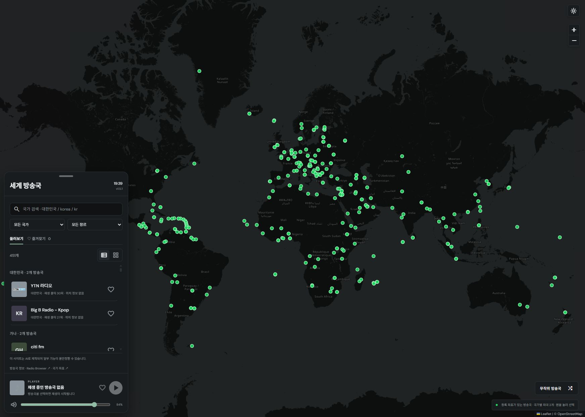

ONE WORLD. MANY FREQUENCIES.
당신의 하루에, 새로운 주파수.
EXPLORE THE WORLD THROUGH SOUND전체 라디오 2
어떤 순간에도, 나에게 맞는 라디오.QUICK GUIDE
처음이라면, 여기부터.
01
가볍게 듣고 싶다면 WWR
사이트를 열고 방송국을 선택하세요.
재생 버튼과 음량 조절로 바로 시작할 수 있어요.
02
트럭과 함께라면 WWR-EUTR
사이트의 ‘유로트럭 연결 요청’을 누르세요.
플러그인 확인과 설정 안내를 따라 연결할 수 있어요.